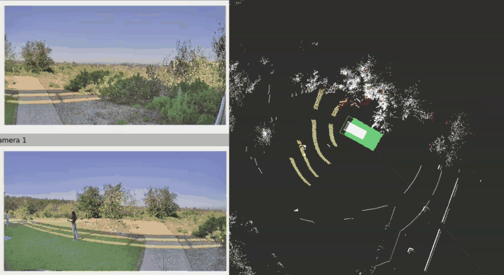
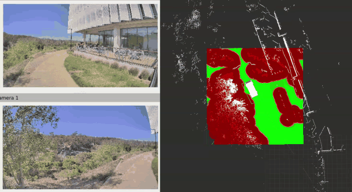
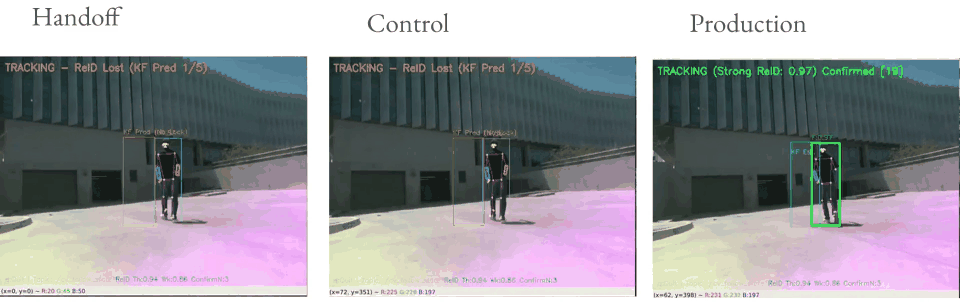
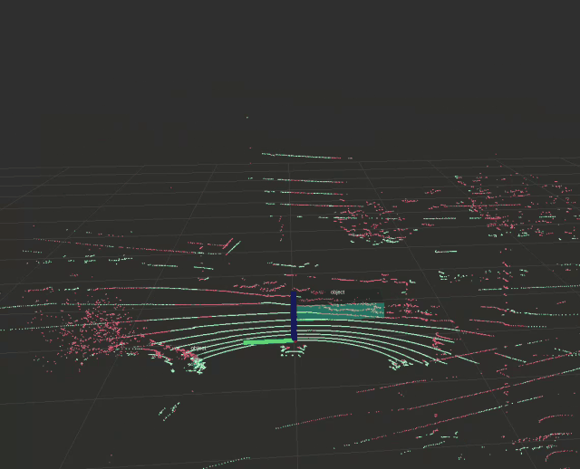
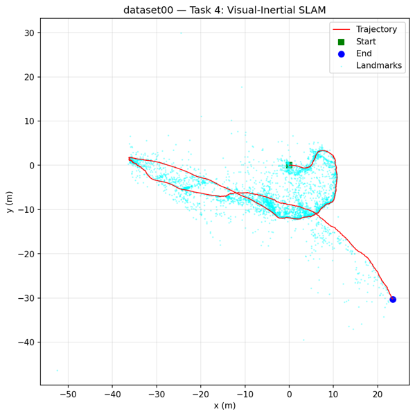
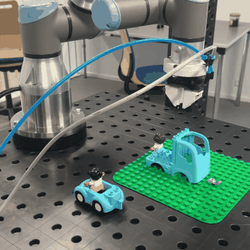
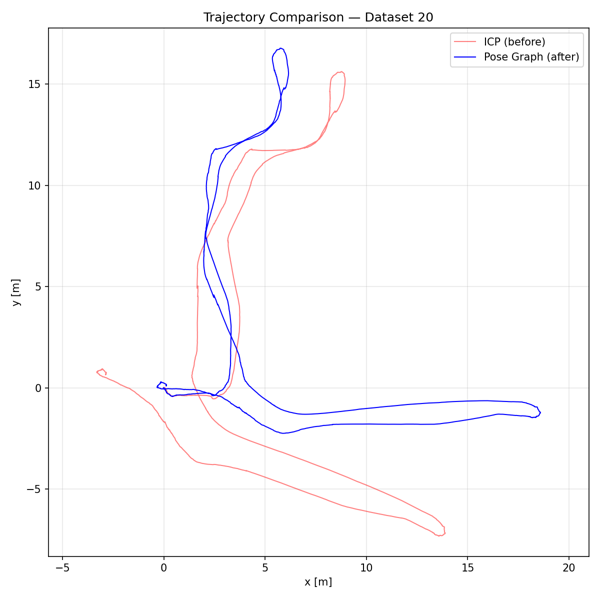
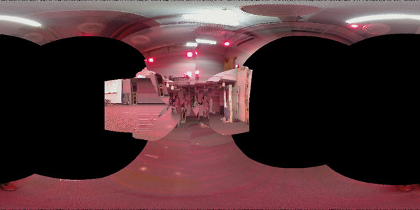

I am an M.S. student in Computer Science (Robotics) at UC San Diego, finishing in March 2027. I research field autonomy in the Autonomous Vehicles Lab.


Traversability is how easily a vehicle can drive over a patch of ground. My map estimates it from two sources. The LiDAR measures shape: slope, roughness, and step height. The cameras identify what the ground is, such as path, grass, or brush. I combine the two into one cost that the Nav2 planner uses to choose a route.
Watch all clips →
A Spot robot follows one person using only an RGB-D camera and a CPU. Its most dangerous error is following the wrong person. The three panels replay the same recording through three versions of the system. A green box means the robot is locked on the right person.
| F-score | Handoff | Control | Production |
|---|---|---|---|
| Outdoor | 0.343 | 0.454 | 0.644 |
| Sun to shade | 0.098 | 0.186 | 0.500 |
| Indoor | 0.207 | 0.227 | 0.577 |
F-score is the harmonic mean of recall and precision. Production scores highest in every section. Its precision stays at 0.976 or higher, so almost every frame it locks on shows the right person. The largest gain is in the passage from sun to shade, the case where the original system failed.
Watch the full video →
My C++ pipeline removes the ground from each LiDAR scan. It then groups the remaining points into objects and boxes each one.
I built a ROS 2 robot that drives itself. An extended Kalman filter combines AprilTag sightings with wheel odometry to estimate its position. A PID controller follows the planned path.

I built a map and a trajectory at the same time from an IMU and a stereo camera. The IMU predicts motion. Landmarks seen by the camera correct the prediction.
Two players command robot Pokémon by voice. I programmed the Mini Pupper quadruped that plays Pikachu and helped write the game controller. The study asks whether a robot's expressive reactions change how players see it.

I programmed a robot arm to pick LEGO parts and place them on a baseplate.
Video →
I matched consecutive LiDAR scans with ICP to estimate motion. Matching scans alone lets error build up over the route (red). Loop closure recognizes a place seen before and removes that error (blue).
Maps →
I estimated a camera's orientation from IMU data. I checked the estimate by using it to stitch the camera's images into a panorama.